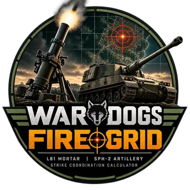

How to use Wardogs FireGrid: mortar & artillery guide
FireGrid is a free Wardogs artillery and mortar calculator. Give it your gun's map coordinates and the target's, and it gives you the firing solution: the bearing to turn to and the mils to set, for the L81 mortar and the SPH-2 self-propelled howitzer.
This guide covers every part of it, from your first fire mission to correcting fire from where your rounds land.
Quick start: your first fire mission
- Open the calculator for your weapon: L81 Mortar or SPH-2.
- On the in-game map, find your gun and type its X and Y into Your position — gun.
- Find the target on the map and type its X and Y into Target position — enemy.
- Turn the gun to the Bearing in degrees, and set the barrel to the Azimuth in mils.
- Fire. If the round misses, enter where it landed in Adjust from impact and fire again with the corrected numbers.
The solution updates as you type; there's no button to press. Enter moves to the next field, Esc clears the target for a new one, and clicking any readout copies it. Your gun position, weapon and mode are remembered in your browser, so they're still there next time.
Reading coordinates from the Wardogs map
Wardogs map coordinates are in units of 100 metres: a coordinate of 96.67 is 9,667 m along that axis. Type the numbers exactly as the game shows them, decimals included, and FireGrid converts them to metres.
Precision is what decides a hit. Each 0.01 is one metre, so a reading that's 0.1 out puts the round 10 m off: often the difference between a direct hit and a near miss. Zoom the map in before you read a position, and read both X and Y to two decimals.
Use the gun's own position, not your character's: on the SPH-2 that's the vehicle, and on the L81 the mortar where you set it down. Re-enter it every time you move.
Understanding the firing solution
Range
The straight-line distance from gun to target across the map, in metres, with the exact figure underneath.
Bearing
The direction to turn to, in degrees clockwise from grid north (north is +Y on the map), with the compass point beside it, for example 203.5° SSW. The compass drawing shows the same direction.
Azimuth
The barrel's elevation in mils. Wardogs calls this the azimuth, so FireGrid uses the game's word. Wardogs mils are on a 6,400-mil circle (one mil is 0.05625°); the elevation drawing shows the angle in degrees as well.
The working
The panel at the bottom shows the maths, A² + B² = C²: the east–west and north–south distances to the target and the range they make. It's a quick way to check a coordinate you might have mistyped.
The L81 mortar
The L81 reaches from 132 m to 684 m and fires at a high angle only, so the more mils you set, the shorter the round falls. FireGrid reads the solution straight from the L81's firing table.
The L81's table has no height correction. If the target sits higher than your mortar, expect rounds to land short; lower, and they land long. Enter both heights in Advanced mode and FireGrid tells you which way to expect the miss, then use Adjust from impact to walk the rounds on.
The SPH-2 self-propelled howitzer
The SPH-2 fires in two arcs; choose one with the Arc selector.
- Low arc, 1,181–2,629 m: a flatter trajectory and a shorter flight, for targets in the open.
- High arc, 780–2,629 m: a steep trajectory that drops over hills, trees and buildings a low-arc shell would hit, and reaches closer targets. In high arc, more mils means a shorter range.
In Advanced mode the SPH-2 also gets the height correction and the platform-tilt correction described below.
Simple and Advanced targeting
Simple is flat ground, straight from the firing table. It's the quickest, and right when your gun is level and the target is at about your height.
Advanced (the default) adds:
- target-height correction for the SPH-2,
- gun-platform tilt for the SPH-2,
- Adjust from impact, for both guns.
Switch with the Targeting buttons at the top of the calculator. Each calculator page remembers its own choice.
Correcting for height (ASL)
ASL is height above sea level, in metres. Take it from the ASL readout in your sight, and enter your gun's height and the target's in the two ASL boxes. A blank box counts as 0, so if you only know your own height, enter it and leave the target blank.
A shell fired at a target below you travels further before it lands than it would on level ground, and one fired uphill falls shorter. On the SPH-2, FireGrid works the trajectory out to the target's height and shows the level-ground range it's firing as, for example fires as for 1,620 m on level ground.
Levelling the SPH-2 (gun-platform tilt)
On uneven ground the SPH-2 leans, and a leaning gun throws its shells off line and off range. The Gun platform panel copies the in-game tilt indicator: a ladder of three notches either side of level, for roll (leaning left or right) and pitch (nose up or down).
- Look at the tilt indicator in game.
- Drag across the drawing for roll and up or down for pitch, or use the Roll and Pitch sliders, until it matches. One notch is about 10°.
- If the hull points a different way from the gun, type the hull's heading in degrees into Hull faces. Left blank, the hull is taken to face the same way as the gun.
The bearing and mils are then corrected for the lean, and the readout says lean-corrected. Set level puts it back to zero. Parking on level ground is still the most accurate option when you can.
Adjust from impact
No calculator knows exactly how your gun is sitting, so the fastest way onto a target is to fire, see where the round lands, and correct. FireGrid does the correction for you:
- Fire using the solution. FireGrid fills Fired with the mils and bearing on screen; change them if you fired something else.
- Find where the round landed on the map and enter its X and Y under Landed, plus its ASL if it landed at a different height (blank means the target's height).
- FireGrid shows how far long or short and left or right it landed, and the corrected next round, for example Landed 30 m short, 12 m left → next 1223 mil · 204.5°.
- Press Apply. The correction becomes part of the solution.
The correction is what your gun's position adds, so it stays in use for other targets nearby, within about 20° of bearing and 30% of range of where it was measured. Log the next impact to refine it. Clear drops it, and moving your gun or changing weapon drops it on its own.
Tips for first-round hits
- Read every coordinate to two decimals with the map zoomed in.
- Re-enter your own position whenever you move, even a short way.
- Enter heights in hilly ground; on the SPH-2 they make a big difference at long range.
- Park the SPH-2 level, or match the tilt gauge if you can't.
- Work with a spotter: they call where each round lands, you log it in Adjust from impact.
- Click the bearing or azimuth to copy it and paste it to your squad.
FAQ
- Is Wardogs FireGrid free?
- Yes, with no account or download. Ads and donations cover the hosting; the Support button on the calculator explains more.
- What units are Wardogs map coordinates in?
- Units of 100 metres: 96.67 is 9,667 m. Type the numbers as the game shows them.
- What is azimuth in Wardogs?
- The barrel's elevation, in mils. FireGrid shows it beside the bearing, which is the direction to turn in degrees.
- Why did my mortar round land short?
- Usually a coordinate that's slightly off, or a target higher than the mortar: the L81's firing table has no height correction, so uphill rounds fall short. Log the impact in Adjust from impact and the next round is corrected.
- Low arc or high arc on the SPH-2?
- Low arc for open ground and the quicker flight; high arc to drop over cover or for targets closer than 1,181 m.
- Does FireGrid work on a phone?
- Yes. On a phone the calculator stacks into one column, handy beside the game or on a second screen.
- Where do the numbers come from?
- The firing tables are community measurements from apollyon-sys/wardogs-calculator; BULKHEAD publishes no official ballistics. The SPH-2's height and tilt corrections come from a ballistic model fitted to those tables and checked against shots in game.
- Is FireGrid official?
- No. It's a fan-made tool, not affiliated with or endorsed by BULKHEAD or Team17.